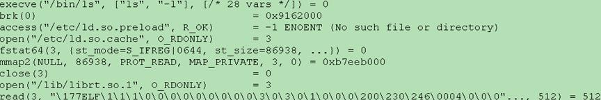
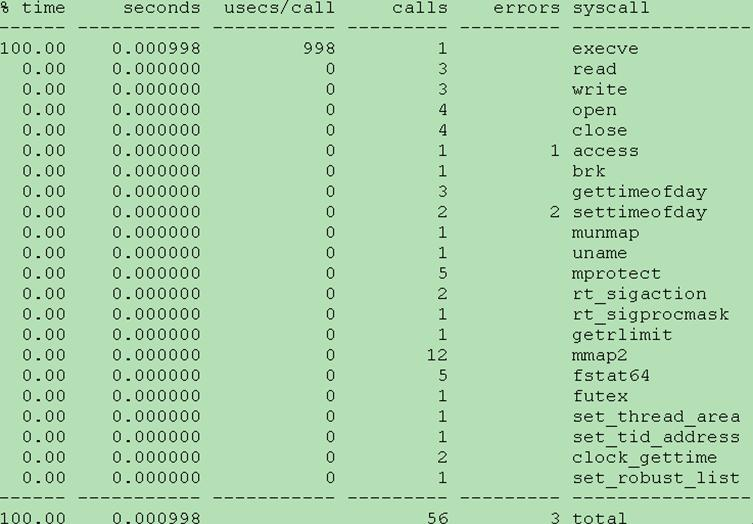
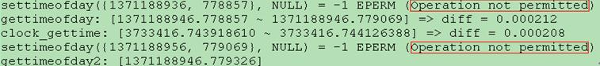

strace是个功能强大的Linux调试分析诊断工具，可用于跟踪程序执行时进程系统调用(system call)和所接收的信号，尤其是针对源码不可读或源码无法再编译的程序。
在Linux系统中，用户程序运行在一个沙箱(sandbox)里，用户进程不能直接访问计算机硬件设备。当进程需要访问硬件设备(如读取磁盘文件或接收网络数据等)时，必须由用户态模式切换至内核态模式，通过系统调用访问硬件设备。strace可跟踪进程产生的系统调用，包括参数、返回值和执行所消耗的时间。若strace没有任何输出，并不代表此时进程发生阻塞；也可能程序进程正在自己的沙箱里执行某些不需要与系统其它部分发生通信的事情。strace从内核接收信息，且无需以任何特殊方式来构建内核。
strace命令格式如下：
strace [-dffhiqrtttTvVxx] [-a column] [-e expr] [-o file] [-p pid] [-s strsize] [-u username] [-E var=val] [command [arg ...]]
或strace -c [-e expr] [-O overhead] [-S sortby] [-E var=val] [command [arg ...]]
通过不同的选项开关，strace提供非常丰富的跟踪功能。最简单的应用是，跟踪可执行程序运行时的整个生命周期，将所调用的系统调用的名称、参数和返回值输出到标准错误输出stderr(即屏幕)或-o选项所指定的文件。注意，命令(command)必须位于选项列表之后。
详细的strace命令选项列举如下：
详细的strace命令选项列举如下：
| 选项 | 含义 |
|---|---|
| -c | 统计和报告每个系统调用所执行的时间、调用次数和出错次数等 |
| -d | 输出strace关于标准错误的调试信息 |
| -f | 跟踪当前进程及其通过fork系统调用所创建的子进程 |
| -ff | 常与-o选项联合使用，不同进程(子进程)的跟踪结果分别输出到相应的filename. pid文件中，pid是各个进程号 |
| -F | 尝试跟踪vfork系统调用。否则即使打开-f选项，vfork也不会被跟踪 |
| -h | 显示帮助信息 |
| -i | 显示发生系统调用时的指令指针(IP)寄存器值 |
| -q | 抑制(禁止输出)关于结合(attaching)、脱离(detaching)的消息。当输出重定向到一个文件时，自动抑制此类消息 |
| -r | 显示每个系统调用发生时的相对时间戳，即连续的系统调用起点之间的时间差 |
| -t-tt-ttt | -t在每行输出前添加绝对时间戳(当前时钟)信息，精确到秒级-tt在每行输出前添加绝对时间戳信息，精确到微秒级-ttt在每行输出前添加相对时间信息，格式为”自纪元时间起经历的秒数.微秒数” |
| -T | 显示每个系统调用所耗费的时间，其时间开销在输出行最右侧的尖括号内 |
| -V | 显示strace的版本信息 |
| -v | 冗余显示模式：显示系统调用中argv[]、envp[]、stat、termio(s)等数组/结构体参数所有的元素/成员内容。这些数组/结构体因使用频繁，默认仅显示其元素/成员的合理子集 |
| -x | 以16进制形式显示非标准(non-ascii)字符串，如”/x08”。默认为8进制，如”/10” |
| -xx | 以16进制形式显示所有字符串 |
| -a column | 设置显示系统调用返回值的列位置，默认为40(从0开始)，即”=”出现在第40列 |
| -e expr | 指定一个表达式，用于限定跟踪哪些事件及如何跟踪。其格式为[qualifier=][!]all或[qualifier=][!]value1[,value2]…。qualifier取值为trace(默认)、abbrev、verbose、raw、signal、read或write。value是用于限定的符号(包括all和none)或数字。感叹号为否定符号，如-eopen等价于-e trace=open，表示只跟踪open系统调用；而-e trace=!open表示跟踪除open外的其他系统调用。注意某些shell用!表示执行历史记录里的命令，此时可能借助引号、转义符号(/)。-e trace=set：跟踪指定的系统调用列表，如-e trace=open,close,read,write表示只跟踪这四种系统调用。默认为set=all。-e trace=file：跟踪以指定文件名做参数的所有系统调用。-e trace=process：跟踪涉及进程管理的所有系统调用，可用于观察进程的fork、wait和exec阶段。-e trace=network：跟踪网络相关的所有系统调用。-e strace=signal：跟踪所有与系统信号相关的系统调用。-e trace=ipc：跟踪所有与进程间通信有关的系统调用。-e abbrev=set：指定哪些系统调用中的大型数组或结构体内容缩减显示，如strace -e abbrev=execve ./test仅显示execve调用中argv[]和envp[]的部分内容。默认为abbrev=all， abbrev=none等价于-v选项。-e verbose=set：指定哪些系统调用中的大型数组或结构体内容完整显示，集合外的调用其数组或结构体显示为地址。默认为verbose=all。-e raw=set：指定哪些系统调用中的参数以原始未解码的形式(即16进制)显示。当用户不信任strace解码或需要了解参数实际数值时有用。-e signal=set：跟踪指定的信号列表，默认为signal=all。如signal=!SIGIO(或signal=!io)表示不跟踪SIGIO信号。-e read=set：以16进制和ASCII码对照形式显示从指定文件描述符中读出的所有数据，如-e read=3,5可观察文件描述符3和5上的输入动作。该选项独立于系统调用read的常规跟踪(由-e trace=read选项控制)。-e write=set：以16进制和ASCII码对照形式显示写入指定文件描述符的所有数据。 |
| -o file | strace输出信息默认显示到标准错误输出，该选项将输出信息写入文件file中。以下两条命令等效：strace -c -o test.txt ./teststrace -c ./test 2>test.txt |
| -O overhead | Set the overhead for tracing system calls to overhead microseconds. This is useful for overriding the default heuristic for guessing how much time is spent in mere measuring when timing system calls using the -c option. The acuracy of the heuristic can be gauged by timing a given program run without tracing (使用time命令) and comparing the accumulated system call time to the total produced using -c. |
| -p pid | 指定待跟踪的进程号(pid)，可用Ctrl-C终止跟踪而被跟踪进程继续运行。可指定多达32个(-p pid)选项以同时跟踪多个进程。该选项常用于调试后台进程 |
| -s strsize | 限制每行输出中字符串(如read参数)的最大显示长度，默认32字节。但文件名总是完整显示 |
| -S sortby | 按指定规则对-c选项的输出直方图进行排序。sortby取值可为time、calls、name和nothing(默认time) |
| -u username | 用指定用户的UID和/或GID身份运行待跟踪程序 |
| -E var=val | 将var=val放入命令的环境变量列表 |
| -E var | 从命令的环境变量列表中移除var |
例如，命令strace -o out.txt -T -tt -e trace=all -p 2899表示跟踪2899进程的所有系统调用，并统计系统调用的时间开销，以及调用起始时间(以可视化的时分秒格式显示)，最后将记录结果存入out.txt文件。
为便于说明，使用strace跟踪ls -l命令执行过程(strace ls -l)，前几行输出如下：
strace记录程序所产生的每次系统调用，并以类似C的格式(无论创建该程序时使用何种编程语言)各自显示为单独的一行。每行起始为系统调用的函数名，括号内为参数，该调用的返回值则显示在等号右侧。当参数为数组或结构体时，显示其元素(方括号)或成员(花括号)内容，见execve和fstat64。当参数为bit时，使用方括号并用空格隔开每项参数，如sigprocmask(SIG_BLOCK,[CHLD TTOU],[]) = 0，第二个参数代表信号SIGCHLD和SIGTTOU；若bit型参数全部置位，则输出如sigprocmask(SIG_UNBLOCK,~[],NULL) = 0，此处第二个参数全部置位。
通过使用-c选项，strace可统计分析进程所有的系统调用(strace -c ./ChangeSysTime)，如：
可看到程序调用哪些系统函数，调用次数、所耗时间及出错次数等信息，有助于分析程序运行速度瓶颈。同时注意到，settimeofday调用出错两次，而该函数在ChangeSysTime程序中被显式调用两次，亦即这两次调用均出错！但ChangeSysTime程序中并未对settimeofday调用作出错处理，故在运行中没有输出任何错误提示。假定程序源码不可修改，则此时就可借助strace找出错误所在(strace -e trace=settimeofday ./ChangeSysTime)：

真相大白，原来调用settimeofday函数时因操作权限不够而被拒绝(需要root权限)！注意，第2、3和5行输出为ChangeSysTime程序打印输出。